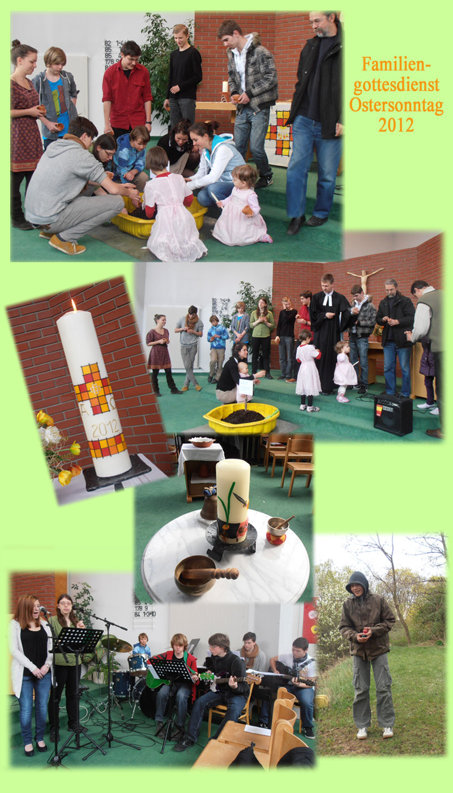

Rückblicke
-
Anfang
Ostergottesdienst 2012: Vom Grabhügel der Verwandlung
Begleitet von der Jugendgruppe "DVUA" wurde im Ostergottesdienst vom Sterben und Wachsen gesprochen.
Mit einer Muschel wurde der Grabhügel der Verwandlung dargestellt.
"Es wird gesät verweslich und wird auferstehen unverweslich" (1.Kor 15,42).
Von dieser Erde konnte man sich einen kleinen Blumentopf mit Samen mitnehmen.
Nach ein paar Tagen gingen sie wirklich auf.
Anschließend konnten die Kinder im Pfarrgarten nach Ostereiern suchen.